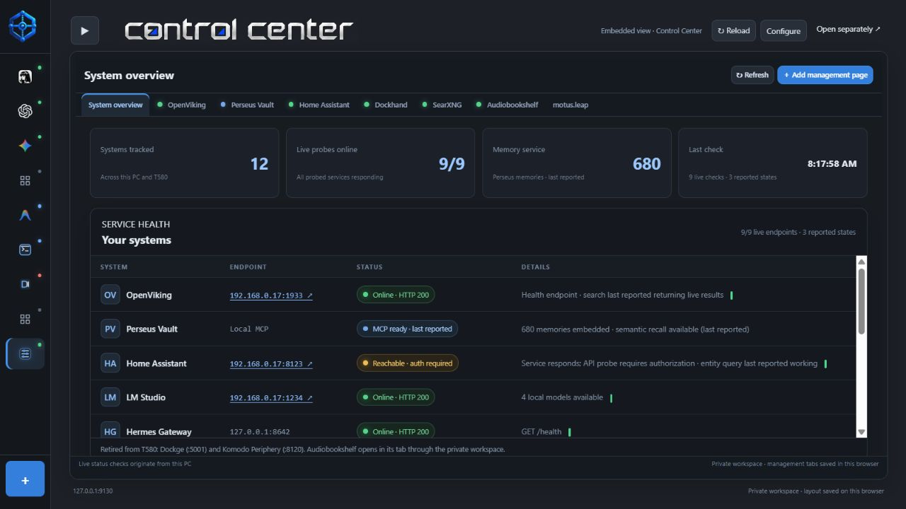

Move between your tools
Keep harnesses and dashboards in persistent browser tabs. Configure addresses and open services separately when embedding is unavailable.

Bring agent dashboards, local services and provider information together in a browser workspace you control.
Local Node.js app • Source package, not a standalone executable • Connected services and credentials are configured separately.

Keep harnesses and dashboards in persistent browser tabs. Configure addresses and open services separately when embedding is unavailable.
Review service health in Control Center. Live probes and previously reported information are identified separately.
Search the provider catalog, open account consoles, and view supported balances or usage with your own credentials.
Local Node.js app • Source package, not a standalone executable • Connected services and credentials are configured separately.
Download source packageRelease downloads are versioned. Source archives include current code and require the documented build tools. GitHub Actions artifacts may be available for newer successful builds and require GitHub sign-in.